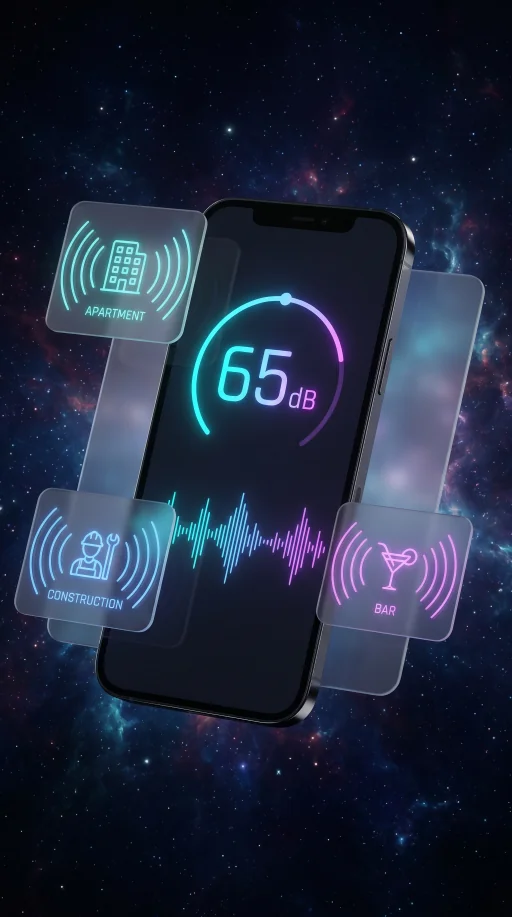

Bar, shop, and street disturbance records.
Document repeated late-night or street-level disturbance patterns with timestamps, place notes, audio, photos, and exportable summaries you can share with property managers or local authorities.


Repeat patterns
Record start, peak, and quiet-after windows so repeated events are easier to compare.

Context media
Attach audio, evidence photos, and notes that explain the source and location context.

Complaint preparation
Export organized records before speaking with a property manager, local authority, or adviser.

Documenting venue disturbances
- Record from inside with windows closed, then note if open.
- Capture bass vibrations and peak periods between 11 PM and 2 AM.
- Export PDF summaries before calling municipal code enforcement.

Local ordinance boundaries
SOUNDTEST.PRO is not a certified sound level meter. Local municipal noise limits and licensing procedures vary. Statutory enforcement requires official inspections.
Frequently asked questions
What decibel level can bars and venues legally play music at?
Most cities set venue indoor music limits between 85 and 100 dB inside, with outdoor or open-window limits of 55 to 70 dB at the property line after 10 or 11 PM. Rules differ sharply by jurisdiction, license type, and time of day. Document the dB level, time, and your location relative to the venue, then check your local entertainment or noise ordinance.
Who do I contact about loud music from a bar or nightclub?
Start with the venue manager or security during the event so they can act in real time. For repeated issues, file a complaint with your city's licensing board, code enforcement, or non-emergency police line. Include timestamps, dB readings, and a short note about whether the issue is one-off or ongoing. SOUNDTEST.PRO reports can be exported as PDF for formal complaints.
Can I record audio inside my apartment to document venue noise?
In most jurisdictions you can record audio inside your own residence for personal documentation. Laws vary for sharing or publishing that recording, and a few regions require one-party or two-party consent. Use the recordings as supporting evidence; do not claim they are calibrated or legally definitive. SOUNDTEST.PRO records are documentation-grade estimates, not certified measurements.
Do weekend and late-night noise rules differ from weekday rules?
Yes, almost universally. Most cities enforce stricter limits after 10 or 11 PM on any day, and some permit noisier activity during weekday daytime hours while restricting weekend mornings. Local ordinance language is what matters, not the venue's stated hours. Capture the time of every event so the pattern is clear in your records.
SOUNDTEST.PRO is a documentation-grade estimate tool, not a certified sound level meter. Verify any formal claim with calibrated equipment and qualified measurement procedures.